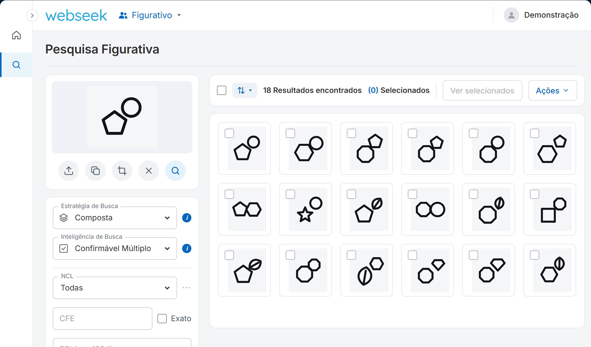

Fadiga cognitiva
Horas comparando imagem por imagem, código por código. Na centésima marca, o olho já não enxerga o que enxergava na primeira.
Envie o logotipo, recorte o elemento que importa e veja, em uma única tela, as marcas do INPI visualmente parecidas — ranqueadas por IA e filtradas por classe NCL e Classificação de Viena. Encontre o conflito antes que ele vire oposição.

Na marca mista e figurativa, o conflito raramente está no nome. Está num círculo, numa folha, numa estrela que passou despercebida no meio de centenas de resultados.
Horas comparando imagem por imagem, código por código. Na centésima marca, o olho já não enxerga o que enxergava na primeira.
O conflito visual que escapa hoje volta amanhã como oposição, nulidade ou indeferimento — com o seu nome no parecer.
Sem evidência visual organizada, explicar ao cliente por que duas marcas conflitam vira opinião contra opinião.
O risco não é falta de tempo. É estrutural. E agora tem solução.
Esta é a tela do Webseek Figurativo. Escolha uma marca de exemplo ou envie a sua, recorte um elemento se quiser e clique na lupa.
Escolha, envie ou cole uma marca e clique na lupa para pesquisar.
Simulação ilustrativa: as marcas e os dados exibidos são fictícios. O resultado real é gerado pela IA do Webseek Figurativo sobre a base do INPI.
Upload, filtro e revisão na mesma tela. Nada de alternar entre sistemas.
Recorte nativo para pesquisar só o símbolo, só o ícone, só o detalhe que importa.
Até 45 classes internacionais e Classificação de Viena (CFE) para afinar o recorte.
Selecione processos e compare lado a lado. Evidência visual pronta para o parecer.
A IA combina score ponderado e análise de elementos conceituais para revelar semelhanças que o olho cansado deixaria passar. Não é só “parecido no pixel” — é parecido no que a marca comunica.
Pesquise um elemento específico da marca sem sair da tela.
Classes NCL (até 45) e Classificação de Viena (CFE) no mesmo painel.
Selecione processos e gere evidência visual para pareceres e para o cliente.
Upload, filtro e revisão de resultados em uma única tela.
O sistema reconhece o hash da imagem: pesquisar de novo a mesma imagem não consome um novo crédito.
O Webseek Figurativo é a primeira busca de anterioridade figurativa com IA do país. Enquanto o mercado segue cruzando códigos na mão, quem usa o Webseek entrega pareceres mais rápidos, mais fundamentados e com menos risco escondido.
Um especialista da LDSoft mostra o módulo ao vivo e como ele complementa a sua busca de anterioridade atual.
Não. A decisão técnica final continua com o especialista. O Webseek Figurativo organiza, ranqueia e evidencia as semelhanças visuais para que a sua análise seja mais rápida, consistente e bem fundamentada.
É um módulo complementar à busca de anterioridade que você já faz. Ele acrescenta a camada de análise visual sem mudar o seu fluxo.
O Webseek Figurativo é um módulo adicional da assinatura Webseek. Se você ainda não é cliente, nosso time mostra na demonstração como começar.
Não. O sistema reconhece o hash da imagem e não cobra uma nova pesquisa para uma imagem idêntica.
Menos risco nas buscas baseadas em CFE, menos fadiga cognitiva e uma avaliação visual mais consistente entre as pessoas da equipe.
Não. O resultado deve ser lido junto com os demais critérios técnicos. A ferramenta não promete resultados definitivos nem elimina o risco jurídico — ela reduz o que fica escondido.
Análise de similaridade visual com IA para pareceres mais rastreáveis — disponível hoje, só no Webseek.